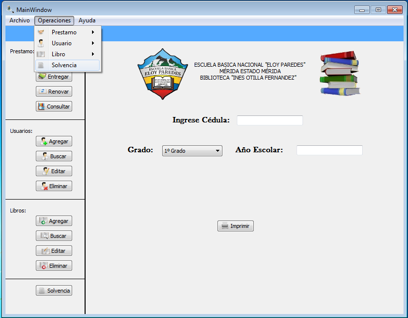
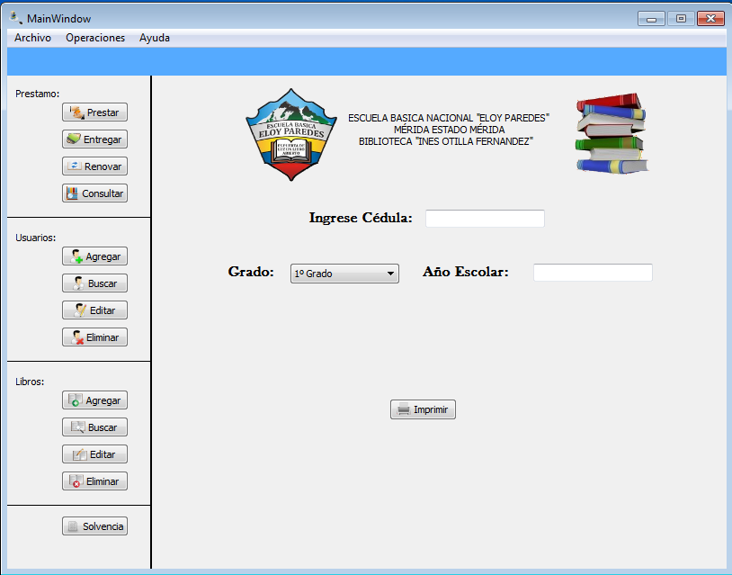

Para realizar la operación de generar una solvencia existen dos forma de realizar dicha operación:
Figura: Menu Operaciones -> Solvencia

Una vez seleccionada la opción solvencia, debe llenar el formulario que se le muestra en la siguiente figura. Terminado de completar el formulario le damos al boton imprimir y la solvencia del usuario ha sido realizada satifactoriamente.
